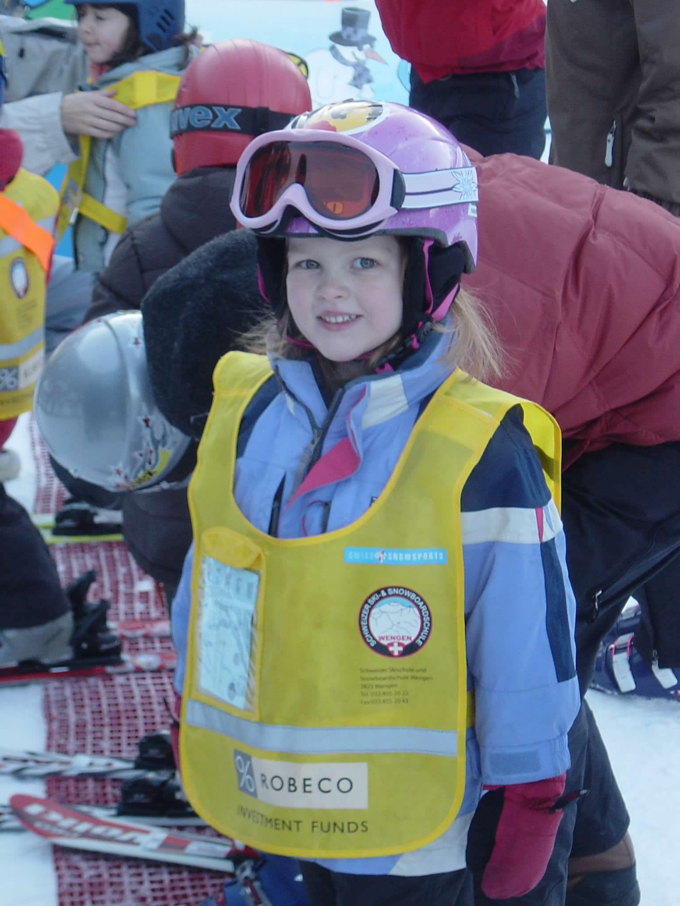
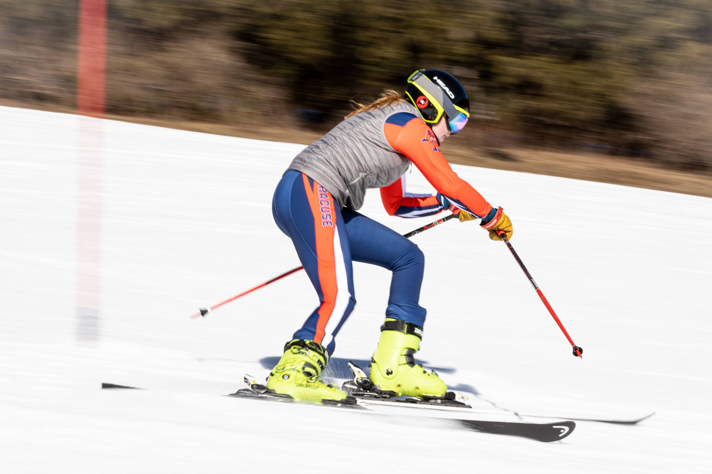

What even is skiing?
Merriam-Webster defines skiing as “the art or sport of sliding and jumping on skis”. A skier attaches long, flat, stick like objects to the bottom of their feet, secured by boots that are specially designed to fit bindings. These allow a person to glide quickly over snow. Skiing is both a recreational and competitive professional sport, however, it began as a form of transportation.

A brief history of skiing
The first records of skiing date back to 7000-8000 BC in Russia and China. In regions with heavy and annual snowfall, skiing was created as a fast new way of transportation. In Scandinavia, skis were used daily by farmers, hunters, and warriors in the Middle Ages. Skiing was a way of survival, as it helped people traverse through mass amounts of snow faster and safer. This led to modifications to the skis, and the addition of ski poles, which helped further propel skiers using the upper body. Skiing was used by armies to cross snow-covered peaks, but also by children to get to school. As time went on, the act of skiing became more and more for pleasure, and less for work. Flash forward to the early 1900’s, and ski mountains start popping up across the US and the world. In 1936, men’s and women’s alpine skiing became an Olympic sport. By the 1980s, skiing had become one of the recreational top winter sports in the US. Today.
A brief skiing history of the author, Gillian Hahn:
Hi. I’m Gillian Hahn. I am a skier. My first skiing experience was at age 2, in my backyard in Maine. My parents grew up skiing and skied all through their lives and decided to teach me as soon as I could walk. By age 4, I could successfully make it down a trail with my dad’s help. By age 6, I could ski completely on my own. Skiing has been the best part of my life since then. I have not missed a ski season since age 2, and I don’t plan on missing one for the rest of my life. Today, I ski for the Syracuse Ski Team and am going into my 11th straight season of skiing at Sunday River in Bethel, Maine.

